A moment for colour and imagination
Colouring pages Choose a colouring page, pick up your pencils and make it your own.
Your colours, your rhythm Here you will find 15 mandalas created with AI assistance and three colouring pages based on Ewa Miłek's paintings. The descriptions and motif names are suggestions for creative play — choose any colours you like.
Printing: Use A4 paper, portrait orientation and fit to page, with browser headers and footers turned off. The mandalas have pastel borders; the pages based on Ewa's paintings have white backgrounds and black outlines. Choose paper suitable for your printer; 120–160 g/m² paper works well with pencils if your printer supports it. Use watercolour pencils dry on ordinary paper.
Colouring pages from Ewa's paintings Three designs created with AI assistance from Ewa Miłek's paintings, preserving their distinctive motifs. Each includes the artist's name and ewamilek.pl.
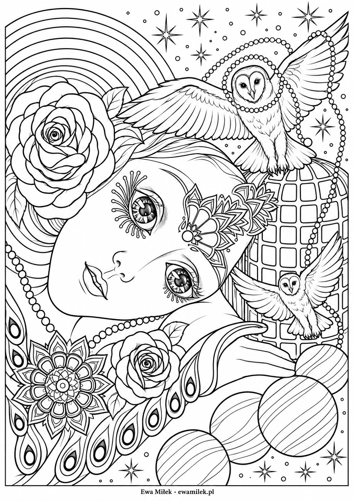
Colouring pages from Ewa's paintings
Owls and roses A portrait surrounded by owls, roses, stars and decorative feathers. Choose a few recurring colours to connect the flowers and ornaments.
Suggested colours Lavender, powder pink, turquoise, navy and warm cream.
Which pencils? Soft coloured pencils for petals and the face; a fine point for feathers and tiny beads.
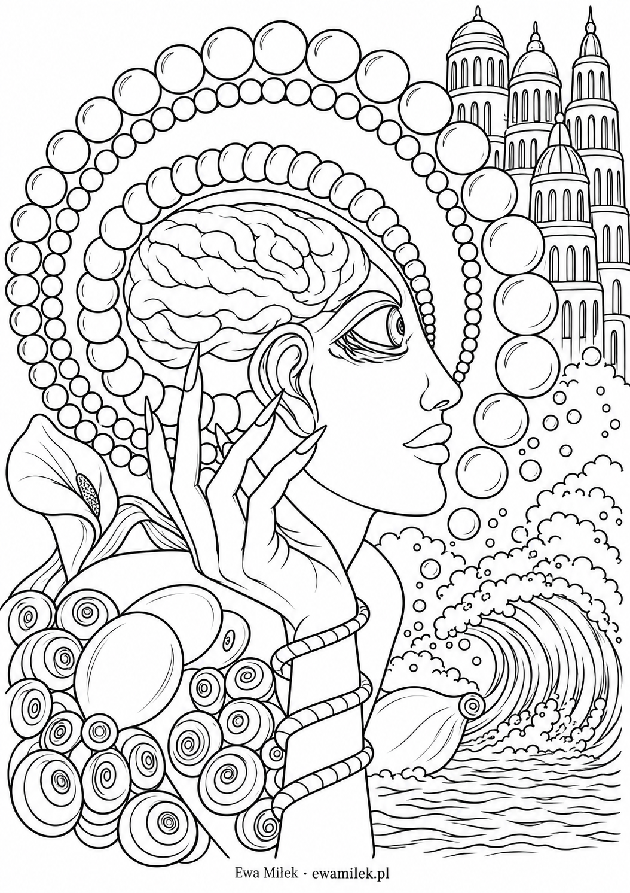
Colouring pages from Ewa's paintings
Mind and ocean A figure in profile, pearl-like circles, fanciful towers and ocean waves offer room for imagination. Try contrasting cool water with warm portrait colours.
Suggested colours Sky blue, turquoise, purple, soft pink and ochre.
Which pencils? Medium-soft coloured pencils; apply light layers to the waves and circular ornaments.
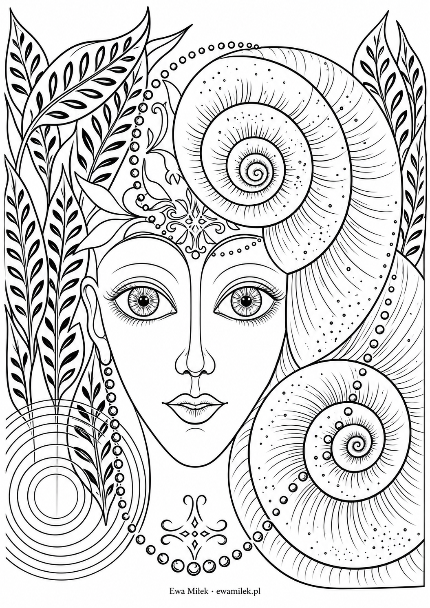
Colouring pages from Ewa's paintings
Spirals and leaves A face among spiral shells, leaves and decorative circles. Repeat your chosen shades in the spirals and give the plants their own colour rhythm.
Suggested colours Emerald green, sea turquoise, mint and yellow-green accents.
Which pencils? Soft coloured pencils or watercolour pencils used dry; a sharp point for leaves and dots.
Ewa's AI-assisted colouring pages Fifteen individual mandala designs created for the website.
Harmony Happiness Prosperity Love Fulfilment Health Balance Money Forgiveness Gratitude 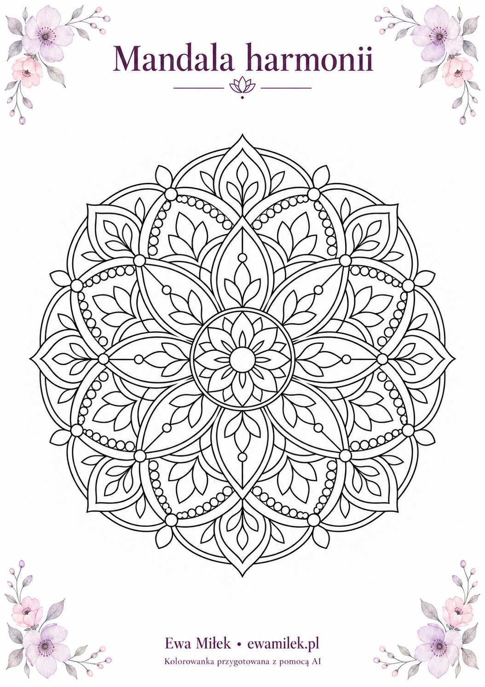
Harmony mandala Repeating petals and leaves create a calm, orderly rhythm. Give matching areas the same colours.
Suggested colours Lavender, sage, powder pink and creamy yellow.
Which pencils? Soft coloured pencils for light layers; a sharp point for tiny circles.
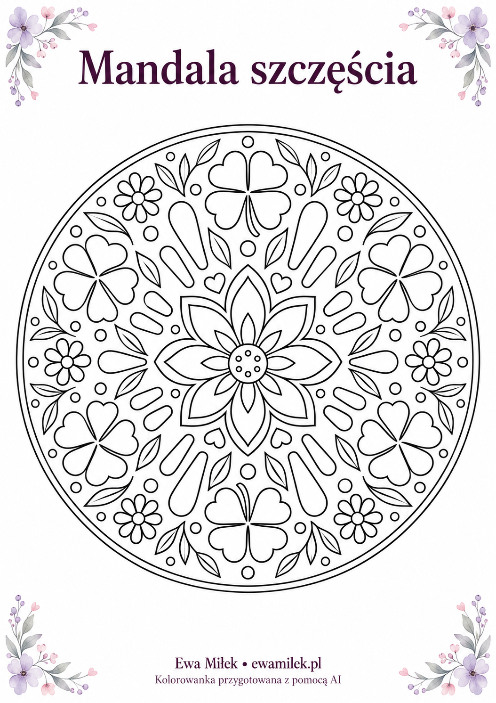
Happiness mandala Clovers and flowers are this mandala's cheerful motifs. Choose one bright colour to repeat in every ring.
Suggested colours Fresh green, sunny yellow, coral and sky blue.
Which pencils? Coloured pencils or wax crayons for larger leaves; a fine point for small flowers.
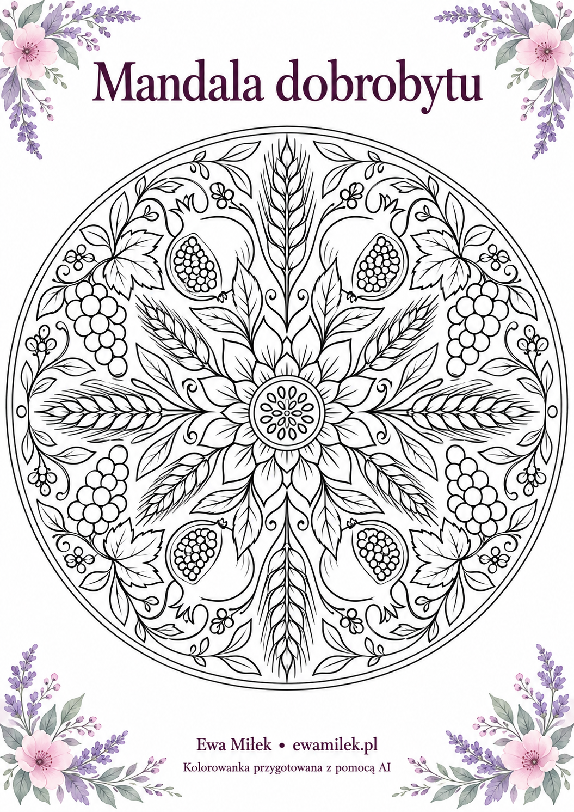
Prosperity mandala Grain, fruit and leaves evoke nature's abundance. Start with the fruit, then bring everything together with leafy greens.
Suggested colours Ochre, burgundy, olive green and plum purple.
Which pencils? Medium-soft coloured pencils for gradual shading of fruit and grain.
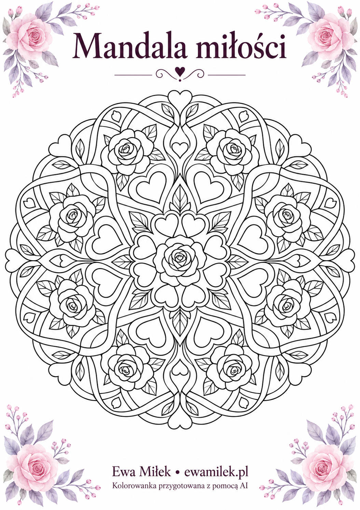
Love mandala Hearts, roses and intertwined ribbons form a composition about closeness. Try pairing delicate petals with stronger heart colours.
Suggested colours Powder pink, raspberry red, lavender and sage.
Which pencils? Soft coloured pencils for gentle transitions on rose petals.
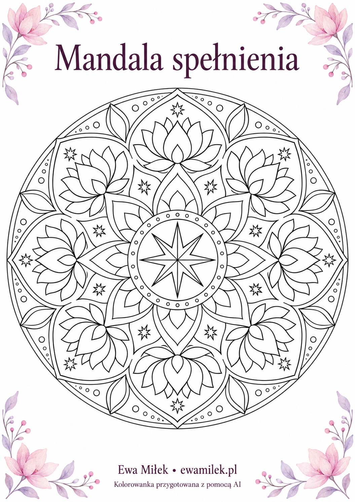
Fulfilment mandala Open lotus flowers and stars suggest blossoming and a completed journey. Keep the centre light and deepen the colours towards the outside.
Suggested colours Golden yellow, purple, turquoise and peach.
Which pencils? Coloured pencils; highlight a few stars with a metallic pencil.
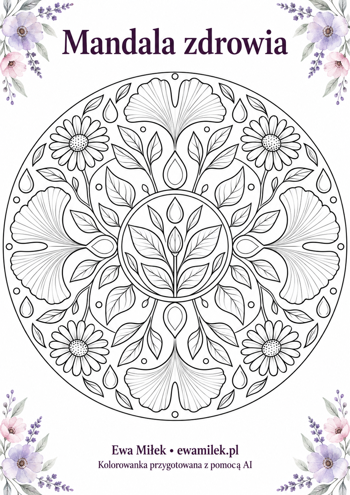
Health mandala Ginkgo leaves, flowers and water droplets create a botanical design inspired by nature's freshness. Leave a little white space between colours.
Suggested colours Mint, green, sky blue and soft yellow.
Which pencils? Soft coloured pencils or watercolour pencils used dry; a fine point helps with leaf veins.
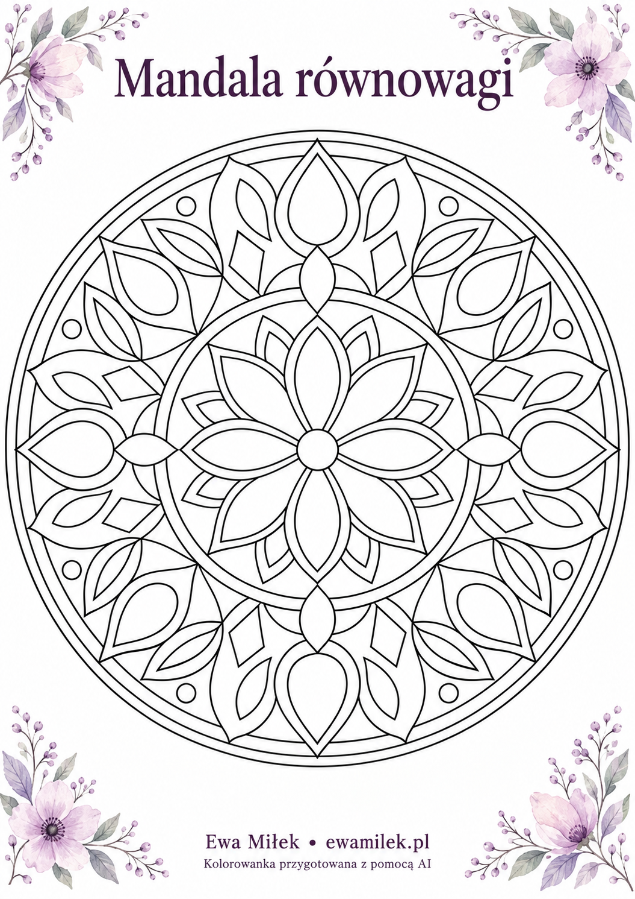
Balance mandala Gentle droplets alternate with geometric diamonds. Repeat two chosen colour combinations on opposite sides of the mandala.
Suggested colours Turquoise and apricot, complemented by lavender and light grey.
Which pencils? Medium-hard coloured pencils for even geometric areas.
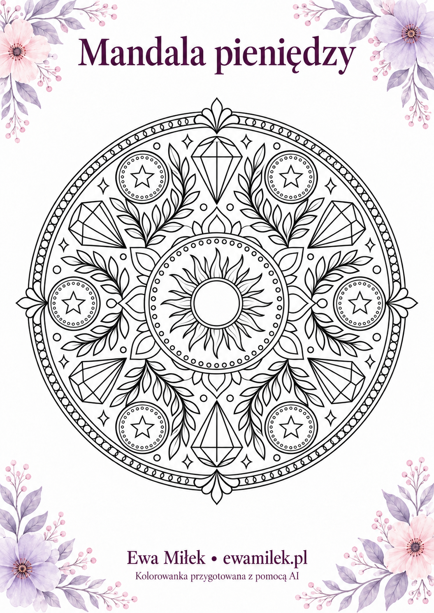
Money mandala Round medallions, leaves and jewels form a decorative money theme. Create golden accents with ordinary yellow and brown pencils.
Suggested colours Golden yellow, emerald green, navy and copper.
Which pencils? Coloured pencils for shading; an optional gold metallic pencil for the medallions.
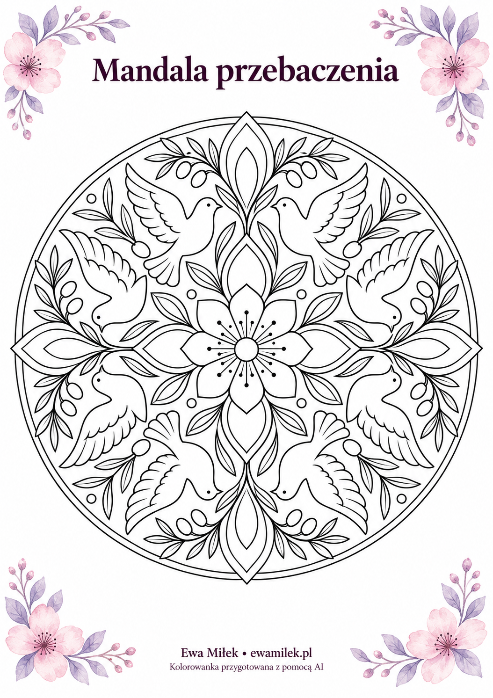
Forgiveness mandala Doves and olive branches evoke reconciliation. Choose gentle colours and leave some parts of the wings light.
Suggested colours Sage, sky blue, lavender and warm cream.
Which pencils? Soft coloured pencils with a light touch on feathers and petals.
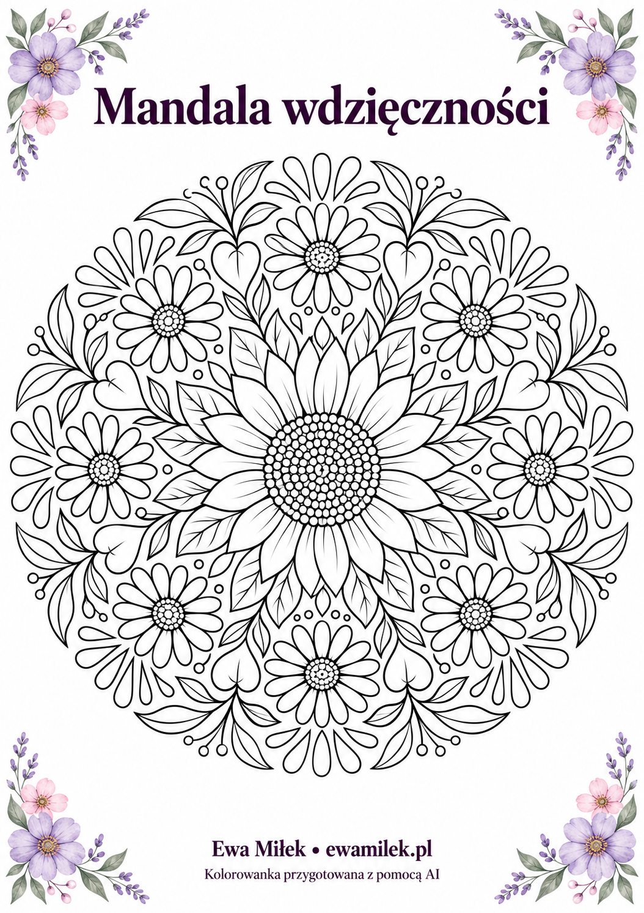
Gratitude mandala Flowers and heart-shaped leaves invite you to notice small joys. Give each flower a colour that reminds you of a happy memory.
Suggested colours Honey yellow, pink, terracotta and olive green.
Which pencils? Soft coloured pencils for petals and a fine point for the sunflower's centre.
Blossoming mandala Petals and leaves suggest growth and new beginnings. Start at the centre and develop the composition layer by layer.
Suggested colours Powder pink, sage, lavender and warm yellow.
Which pencils? Soft coloured pencils; light pressure allows translucent layers.
Peace mandala Waves and droplets create a repeating rhythm inspired by water. Choose a few shades and repeat them in successive rings.
Suggested colours Sky blue, turquoise, light purple and silvery grey.
Which pencils? Well-sharpened coloured pencils for small droplets.
Transformation mandala Butterflies symbolise change and discovering new possibilities. Each pair of wings can have its own palette.
Suggested colours Purple, pink, mint and soft coral.
Which pencils? Coloured pencils for outlines and soft wax crayons for larger areas.
Joy mandala A radiant composition evokes light and warmth. Keep the centre bright and add stronger accents to the outer petals.
Suggested colours Yellow, apricot, orange and a touch of pink.
Which pencils? Soft coloured pencils that blend well when shading.
Dream mandala Stars and moons invite imaginative play. Alternate cool areas with small, bright accents.
Suggested colours Indigo, lavender, sky blue and golden yellow.
Which pencils? Fine-point coloured pencils; a metallic pencil can highlight individual stars.


{kind=link}
{kind=link}
{kind=link}
{kind=link}
{kind=link}
{kind=link}
{kind=link}
{kind=link}
{kind=link}
{kind=link}
{kind=link}
{kind=link}
{kind=link}